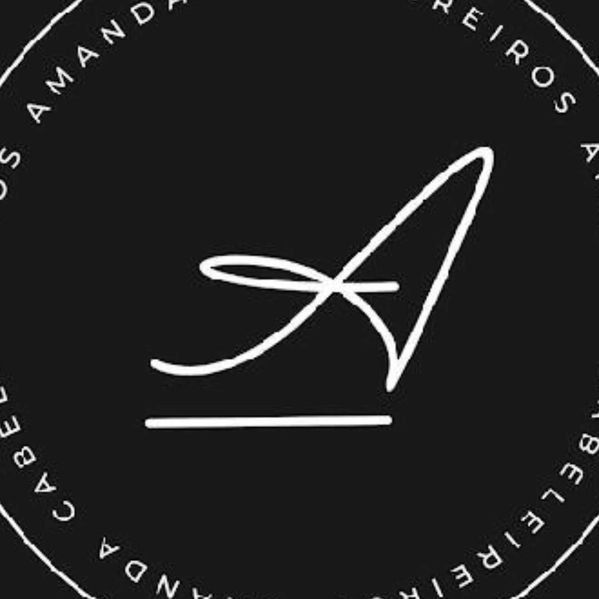
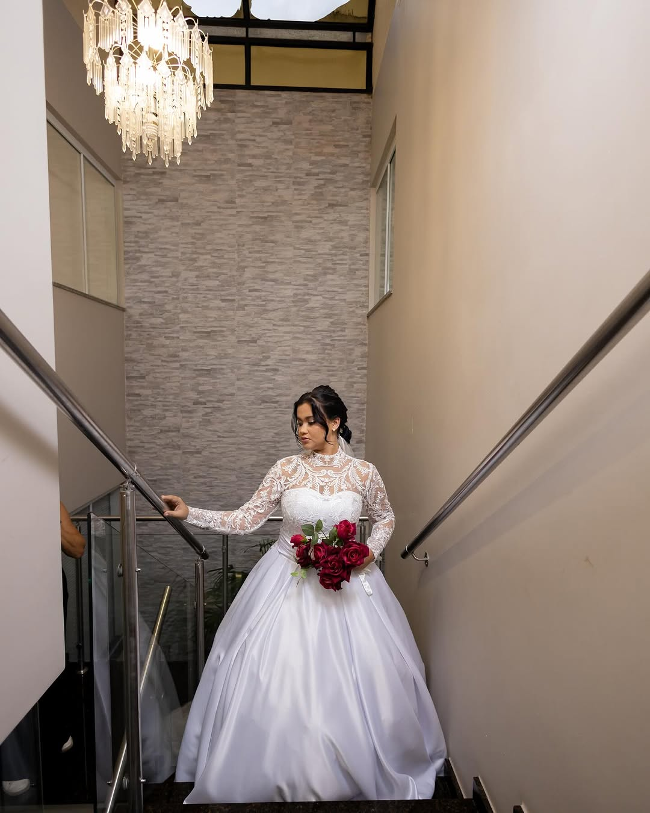
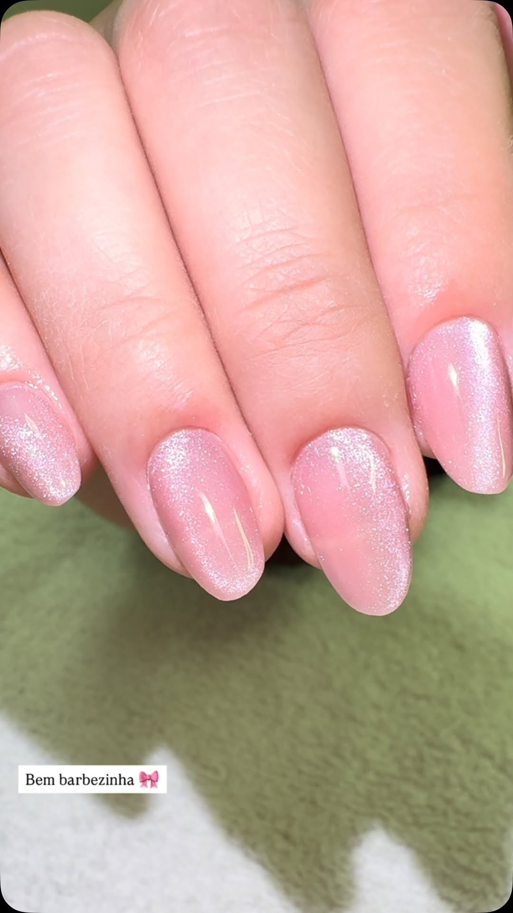

Mais de 35 anos cuidando da beleza do bairro.
Um salão de bairro que virou tradição de família: geração depois de geração, sempre o mesmo cuidado, sempre a mesma casa.

Uma casa de bairro, não uma franquia.
O Amanda Cabeleireiros está no Jardim Vale do Sol há mais de 35 anos. Antes de virar tendência, o salão já era o lugar em que as famílias do bairro se conheciam pelo nome, não pela ficha de cadastro.
É esse tipo de casa em que quem chega uma vez costuma voltar por anos, e às vezes por décadas: filha que cresceu vindo com a mãe, cliente que virou amiga da equipe, corte que vira ritual de toda semana.
“Tem cliente que chegou aqui ainda criança, em 2008, e continua vindo até hoje.”
É esse tipo de fidelidade que 35 anos de bairro constroem.Correção de cor, loiro, mechas e tonalização.
A coloração que vira assunto no bairro.
Tem colorista que só faz a cor combinada. Tem colorista que as clientes fazem questão de esperar a agenda abrir. No Amanda Cabeleireiros, esse colorista é o Beto Júnior.
É o nome que aparece primeiro quando uma cliente indica o salão para uma amiga, e o motivo de muita gente não trocar de cabeleireiro nem quando muda de bairro.

Cabelo e maquiagem pensados para o dia mais importante, com o mesmo cuidado que faz o salão ser referência no bairro há mais de 35 anos.
O quadro de serviços
Tudo o que o salão oferece, num só lugar. Para agendar, é só chamar no WhatsApp.

Unhas Manicure e esmaltação em gel.Vamos marcar o seu horário?
Chame no WhatsApp e a equipe do Amanda Cabeleireiros confirma o melhor horário para você.